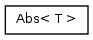
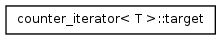
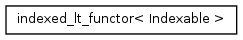

Main Page
Namespaces
Classes
Files
Class List
Class Index
Class Hierarchy
Class Members
Graphical Class Hierarchy
Go to the textual class hierarchy



Muster
. Copyright © 2010,
Lawrence Livermore National Laboratory
, LLNL-CODE-433662.
Distribution of Muster and its documentation is subject to terms of the Muster
LICENSE
.
Generated on Fri Nov 12 2010 using
Doxygen 1.7.1


 Muster.
Copyright © 2010, Lawrence Livermore National Laboratory, LLNL-CODE-433662.
Muster.
Copyright © 2010, Lawrence Livermore National Laboratory, LLNL-CODE-433662.